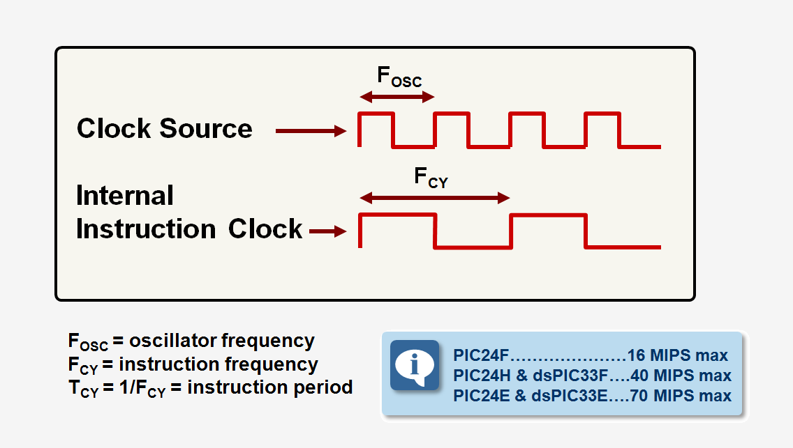

In computer systems, a clock is a device that generates a continuous stream of pulses at a specific frequency. This stream of pulses, known as the clock signal, is used to synchronize and coordinate the various components and operations within a computer.
A clock is a critical component in digital electronic systems, including computers. It generates a periodic signal that serves as a timing reference for the entire system. The clock signal is used to regulate the timing of various operations, such as fetching instructions, executing calculations, and transferring data between components.
The clock signal is a square wave that alternates between two voltage levels, typically between a high voltage (representing a binary 1) and a low voltage (representing a binary 0). The time between successive rising or falling edges of the clock signal is known as the clock period, and its inverse is the clock frequency.
The frequency of the clock signal is measured in hertz (Hz), which represents the number of cycles per second. Higher clock frequencies allow for faster execution of instructions and data processing, leading to improved overall system performance.
The clock signal must be distributed throughout the computer system to ensure that all components are synchronized and operating in lockstep. This is typically achieved through a clock distribution network, which consists of a main clock source and various clock buffers and drivers.
The main clock source generates the initial clock signal, which is then distributed to different components and subsystems using clock buffers and drivers. These devices amplify and distribute the clock signal to ensure that it reaches all parts of the system with minimal distortion and skew (timing differences between different parts of the system).
Clock skew and jitter are two important factors that can impact the reliability and performance of a computer system.
Clock Skew: Clock skew refers to the timing differences between the clock signals arriving at different components or subsystems within the computer. It is caused by variations in the length of the clock signal paths, differences in propagation delays, and other factors. Excessive clock skew can lead to timing violations, resulting in data corruption or system crashes.
Clock Jitter: Clock jitter is the short-term variation in the clock signal's period or phase, causing it to deviate from its ideal timing. Jitter can be caused by various factors, such as electrical noise, power supply fluctuations, or temperature variations. Excessive clock jitter can also lead to timing violations and system instability.
In complex digital systems, different components or subsystems may operate at different clock frequencies or have independent clock domains. When data needs to be transferred between these different clock domains, a synchronization mechanism known as clock domain crossing is required.
Clock domain crossing involves synchronizing the data transfer between the two clock domains to prevent data corruption or metastability issues. This is typically achieved through the use of specialized circuits or techniques, such as handshaking protocols, dual-ported memories, or asynchronous FIFO buffers.
The clock is a critical component in computer systems, as it provides the timing reference that synchronizes and coordinates the operation of all other components. Without a stable and reliable clock, the various components within a computer would not be able to communicate and operate in a coordinated manner, leading to system failures and data corruption.
The design and implementation of clocks, clock distribution networks, and clock synchronization techniques are crucial areas of research and development in computer architecture and digital electronics. Advancements in clock technology, such as low-jitter clock sources and improved clock distribution techniques, continue to drive improvements in system performance, reliability, and energy efficiency.